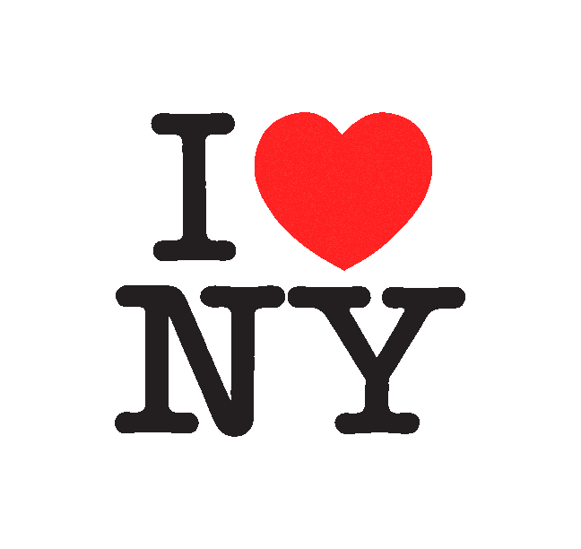
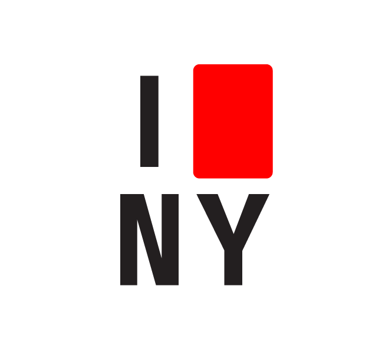
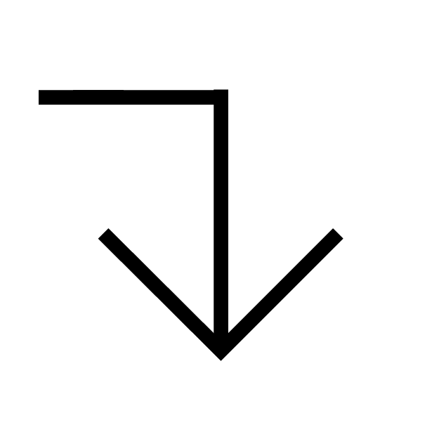

| |
|
Wednesday November 4, 2020
It’s a strange morning, this one. Last night was the Presidential election, and the results aren’t yet final. I guess that we maybe feel much like you do right now. On edge. Anxious. Not sure what comes next. New York City businesses are staring at a second lock down due to the Corona virus. Street life, which bloomed over the summer, is starting to retreat indoors. We are preparing to spend more time alone.
It isn’t the first time New York has felt like this. We don't necessarily remember it, but we have seen enough pictures to have an idea what it felt like. New York around 1977 was a different place and in many ways that we find positive. We are optimistic.
There were spaces for artists. Spaces for making art. Spaces for living as an artist. Spaces for showing what was being made. And spaces for distributing art outside of a commercial context. Financial pressures in the city were not what they are today.
That year, 1977, and riding in the backseat of a New York City taxi, graphic designer Milton Glaser sketched out this familiar logo:

I heart New York. It’s a sentiment that is easy to get behind. Many, many people have. In the thick of deep uncertainty now, still we are happy to be here, with each other, and not anywhere else. We know this graphic from its endless repetition on T-shirts, I took bags, hats, keychains, you name it, and other things. It is now a registered trademark of the State of New York Department of Tourism.
What now then, while we wait? What's to be done in this limbo zone between the start of the pandemic and the return to some kind of regular city life. It can't be, it must not be, to prepare for a return to normal. Neither can it be a return to the new normal, a term more convenient and passive than imaginative and constructive and which gets tossed around so easily.

How to keep things moving?
And, when everything feels so perfectly static. Well, let's make it over, let's make it new, and let's make it the way we want it to be. We can make it more just. We can make it more possible. This is group work. It relies on each everyone. There are a lot of us, still. And we're strongest together.
Continue reading . . .

NEW YORK CONSOLIDATED
225 W 13 ST NY, NY 10011
N-Y-C.ORG
|
|
Unsubscribe
|
|
|
|
{kind=link}